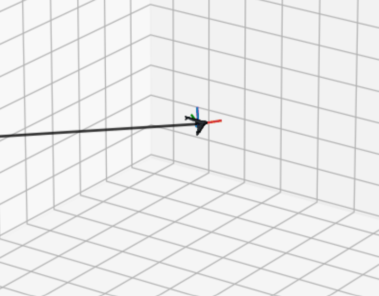

Synchronized MPC Flight Animation and Attitude Tracking
Surrogate-Based MPC Control of a Fixed-Thrust Flying Wing
Overview
Fancy Result: Surrogate Model Based Control
Surrogate modeling in the field of computational fluid dynamics (CFD) is the process of replacing costly simulation with data driven ML models to predict aerodynamic data at a lower cost. This practice has become increasingly popular in both research and industry in recent years for applications where data is needed quickly and in large quantities where greater error bands are acceptable, such as in control or design iteration. Given that the members of our group all work in aerospace or aerospace related fields we wanted to see if we could use the knowledge we have gained from E178 to create a surrogate model and apply it to an aircraft control problem.
To create this surrogate model we utilized multiple regression frameworks to train a predictor that can take in 4 positional and control surface angles and map those values to 6 aerodynamic force and moment coefficients acting on the aircraft anywhere in 3D space. We trained this model on sparse aerodynamic data generated in NASA made panel method solver OpenVSP for a flying wing aircraft. We then used this data to create three different regression frameworks. These frameworks included a Multi-Output Linear Regression, Gradient Boosted Trees algorithm, and a Multi-Layer Perceptron neural network (MLP), the best of which we used for our controller. We then took this model and used as the dynamics solver and predictor within a Model Predictive Control (MPC) framework able to control the trajectory of the aircraft. The results of this control integration can be seen in the animation to the right with the controller being able to successfully achieve the desired control goal. This demonstrates the accuracy of our final regression model as well as demonstrating the practical application of creating a surrogate model with the techniques learned in this class.
Each step of this process is detailed in the diagram below, click on the steps that interest you to learn more!
Project Flow
Click a step to open its page.

Sparse Data Generation
Sparse Data Generation and Input
Data generation from OpenVSP simulation.

Model Creation Process
Surrogate Model Process and Results
Creation, evaluation, and selection of the regression based surrogate model.

Surrogate Model Based Control Results
Surrogate Model Application and Results
Use the regression based surrogate model in an aircraft control problem.